전기철도기사 (2005-05-29 기출문제)
1과목: 전기철도공학
1. 가공 전차선로의 인류장치에 대한 설명으로 틀린 것은?
- 온도변화에 따른 신축작용을 흡수하는 장치이다.
- 조가선과 전차선을 각각 따로 인류하여야 한다.
- 장력조정장치에는 자동식과 수동식이 있다.
- 인류구간 장력조정장치의 조정거리는 800m 내외를 표준으로 한다.
(정답률: 알수없음)

2. 직류 전차선로에서 귀선로의 전기저항이 높아 전압강하 및 레일 전위의 상승을 억제하기 위해 설치하는 것은?
- 흡상선
- 보조귀선
- 인입귀선
- 중성선
(정답률: 알수없음)
3. 전차선의 조가방식에 대한 설명으로 틀린 것은?
- 조가선으로부터 행거를 이용하여 트롤리선을 조가시킨 방식을 커티너리 조가식이라 한다.
- 강체 조가식은 곡선당김장치가 필요 없다.
- 직접조가식에서 트롤리선을 스펜션이나 빔(Beam) 등의 지지점에 직접 고정하는 구조에서 전차선(트롤리선)의 장력 및 높이를 일정하게 할 수 있다.
- 트롤리선과 조가선과의 이루는 면이 수직인 것을 수직 조가선, 경사된 면이나 비틀어진 면을 이루는 것을 사조식이라 한다.
(정답률: 알수없음)
4. 표준전압 교류 25000V 로 공급하는 전차선의 허용 최고 전압의 한도는 몇 V 인가?
- 25000
- 27000
- 28000
- 30000
(정답률: 알수없음)
5. 한 개의 팬터그래프를 사용하는 전기차가 운행되는 구간의 교류 25kV 이상구분용 절연구분장치(Dead section)의 최소 길이는 몇 m 가 적정한가?
- 4
- 8
- 12
- 16
(정답률: 알수없음)
6. 헤비심플커티너리 조가방식에서 전차선(Cu 170㎜2)의 잔존 단면적을 87.6㎜2 라 하면 전차선의 허용장력은 약 몇 kgf 인가?(단, 전차선의 파괴강도는 5900kgf, 계산 단면적은 170㎜2, 안전률은 2.2 이다.)
- 1382
- 1432
- 1455
- 1510
(정답률: 알수없음)
7. 전차선의 이선시간이 수십분의 일초 정도의 것으로 전차선 또는 팬터그래프 습판의 미세한 진동에 따른 이선을 무엇이라 하는가?
- 대이선
- 중이선
- 소이선
- 특이선
(정답률: 알수없음)
8. 20t 의 전차가 20/1000 의 구배를 올라가는데 필요한 견인력은 몇 kg 인가?(단, 열차 저항은 무시한다.)
- 0.4
- 100
- 400
- 400000
(정답률: 알수없음)
9. 교류 전기철도 커티너리 가선방식의 곡선구간에서 전차선의 위치를 소정의 범위내로 끌어 당기는 장치는?
- 진동방지장치
- 곡선당김장치
- 장력조정장치
- 흐름방지장치
(정답률: 알수없음)
10. 전기차에서 효율이 0.9 인 주 전동기가 3대인 경우 출력은 몇 kW 인가?(단, 주 전동기의 단자전압은 1200V, 전류는 200A 이다.)
- 216
- 267
- 648
- 800
(정답률: 알수없음)
11. 팬터그래프와 전차선은 계속 접촉된 상태로 있어야 하나, 팬터그래프의 이동에 따라 순간적으로 이탈이 발생하게 되는데 이러한 현상을 무엇이라 하는가?
- 파동현상
- 이선현상
- 페란티현상
- 탈조현상
(정답률: 알수없음)
12. 직류 T-bar 방식 전차선로의 지상부 이행장치에서 지상부 전차선의 가선방식으로 가장 적당한 것은?
- 컴파운드 커터너리 가선방식
- 헤비 심플 커터너리 가선방식
- 심플 커터너리 가선방식
- 더블 심플 커터너리 가선방식
(정답률: 알수없음)
13. 흡상변압기의 접속방법이 옳은 것은?
- 1차측을 전차선에, 2차측을 부급전선에 병렬 접속
- 1차측을 부급전선에, 2차측을 전차선에 병렬 접속
- 1차측을 전차선에, 2차측을 부급전선에 직렬 접속
- 1차측을 부급전선에, 2차측을 전차선에 직렬 접속
(정답률: 알수없음)
14. 정류기의 3상 전파방식에서 평균값 E 를 표시하는 식은? (단, V 는 선간전압이다.)
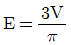
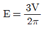
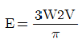
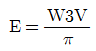
(정답률: 알수없음)
15. 단상 교류식 전기철도에서 전압 불평형을 경감하는데 사용되는 방법은?
- 스코트 결선
- 역 V 결선
- 전력용콘덴서 설치
- 분로리액터 설치
(정답률: 알수없음)
16. 직류 1500V 방식에서 가공 전차선의 가압부분과 대지와의 절연 표준 이격거리는 몇 mm 인가?
- 150
- 200
- 250
- 300
(정답률: 알수없음)
17. 교류구간 급전계통에서 병렬급전이 어렵고, 각각의 변전소로부터 급전을 행하는 "단독급전방식"을 채택하는 사유는?
- 전압강하 때문이다.
- 주파수 때문이다.
- 전압차 때문이다.
- 위상각 때문이다.
(정답률: 알수없음)
18. 강체 전차선로에서 온도변화에 따른 확장장치(Expansion Device)의 설명으로 옳은 것은?
- 온도가 올라가면 강체 전차선이 팽창되어 길이가 짧아진다.
- 온도가 내려가면 강체 전차선이 수축되어 길이가 짧아진다.
- 온도가 올라가면 강체 전차선이 수축되어 길이가 짧아진다.
- 온도가 내려가면 강체 전차선이 팽창되어 길이가 길어진다.
(정답률: 알수없음)
19. 급전계통을 전기적으로 구분하는 목적이 아닌 것은?
- 전기차량의 속도를 높여 원활한 운행을 하기 위하여
- 변전소에서 발생하는 이상전력을 구분하기 위하여
- 사고가 발생하였을 때 사고의 파급 범위를 최소로 축소하기 위하여
- 보수작업 등 정전작업이 필요할 때 정전구간을 확보하기 위하여
(정답률: 알수없음)
20. 교류방식 전철구간의 이상구분과 교류 및 직류를 구분하기 위해 주로 사용되는 구분장치는?
- 에어섹션
- 에어죠인트
- 데드섹션
- 애자형섹션
(정답률: 알수없음)
2과목: 전기철도 구조물공학
21. 인류용 지선의 설계하중을 정확하게 표현한 것은?
- 인류된 전선의 장력의 최대값을 인류기둥에 받는 풍압 하중으로 나눈 값
- 인류된 전선의 장력의 최대값을 인류기둥에 받는 풍압 하중으로 곱한 값
- 인류된 전선의 장력의 최대값에서 인류기둥에 받는 풍압하중을 뺀 값
- 인류된 전선의 장력의 최대값과 인류기둥에 받는 풍압하중을 합한 값
(정답률: 알수없음)
22. 지반과 구조물과의 접촉점뿐만이 아니고 일반적으로 구조물을 지지하고 있는 지지물과 접촉하는 지점(Support)에 속하지 않는 것은?
- 이동지점
- 회전지점
- 고정지점
- 평행지점
(정답률: 알수없음)
23. 전차선로용 강구조물 중 주기둥재의 세장비는 얼마 이하로 제한하는가?
- 150
- 200
- 220
- 250
(정답률: 알수없음)
24. 트롤리선이 접촉부분에서 아크방전이 발생하여 가열 단선되는 시간을 나타내는 공식은?(단, I 는 아크전류[A]이고, t 는 지속시간[sec]이다.)
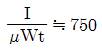
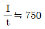
- Ｉ·t ≒ 750
- Ｉ·㎼ t ≒ 750
(정답률: 알수없음)
25. 전기차의 집전장치가 직접 접촉하여 전력을 공급받는 전차선을 지지하는 지지물과 지지물간의 간격을 무엇이라고 하는가?
- 가고
- 편위
- 높이
- 경간
(정답률: 알수없음)
26. 가동브래키트용 애자의 안전률은 얼마 이상으로 하여야 하는가?
- 파괴하중에 대하여 2.0 이상
- 파괴하중에 대하여 2.5 이상
- 최대 만곡하중에 대하여 2.0 이상
- 최대 만곡하중에 대하여 2.5 이상
(정답률: 알수없음)
27. 구조용 강재(鋼材)로 가장 많이 사용되는 것은?
- 특수강
- 연강(軟鋼)
- 경강(硬鋼)
- 합금강
(정답률: 알수없음)
28. 길이가 24m 이고 빔의 모양이나 재질이 일정한 문형 빔에 작용하는 수직하중이 1500㎏f 일 때 이 빔의 수직 등분포 하중은 몇 ㎏f/m 인가?
- 52.5
- 62.5
- 1⑤
- 125
(정답률: 알수없음)
29. 고정지점과 이동지점의 지점반력수로 맞는 것은?
- 고정지점 : 3개, 이동지점 : 2개
- 고정지점 : 2개, 이동지점 : 3개
- 고정지점 : 3개, 이동지점 : 1개
- 고정지점 : 1개, 이동지점 : 3개
(정답률: 알수없음)
30. 철도, 도로 등을 횡단하는 수평지선의 높이로 맞는 것은?
- 궤도면상 6.5m 이상, 도로면상 6m 이상
- 궤도면상 6m 이상, 도로면상 6m 이상
- 궤도면상 5.5m 이상, 도로면상 5m 이상
- 궤도면상 5m 이상, 도로면상 5m 이상
(정답률: 알수없음)
31. "어떤 점에 대한 여러 개의 힘의 모멘트의 대수합은 그들 힘의 합력 모멘트와 같다"라는 말은 어느 법칙 또는 정리를 말하는가?
- 바리니온의 정리
- 라미의 정리
- 베르누이의 정리
- 훅크의 법칙
(정답률: 알수없음)
32. 전기철도 구조물 중 2차원 구조물에 해당되지 않는 것은?
- 라멘
- 패널
- 플레이트
- 쉘
(정답률: 알수없음)
33. 전철주로서 철주를 사용해야 하는 개소가 아닌 것은?
- 교량의 난간 등에 건식하는 경우
- 열차의 운행속도가 고속인 직선 선로인 개소
- 건축한계에 지장을 주는 장소로 20m 이상의 빔을 설치해야 하는 개소
- 전선의 수평장력이나 빔의 중량, 기타 풍압에 대하여 강도가 약한 개소
(정답률: 알수없음)
34. 지름 d 인 원형 단면으로부터 휨에 대하여 가장 강한 장방형 단면으로 제재했을 때 단면계수는?
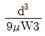
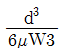
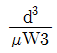
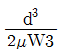
(정답률: 알수없음)
35. 철주 주체를 상부와 기초부로 분할하여 기초부 완료 후기초부 주체와 상부 주체를 볼트로 체결하여 시공하는 방식은?
- 직매입 방식
- 근계매입 방식
- 핀(Pin)매입 방식
- 간이매입 방식
(정답률: 알수없음)
36. 경사재의 설치 방법을 결정하는 사항이 아닌 것은?
- 세장비의 제한
- 발생 응력의 크기
- 주재와의 접합부에 작용하는 하중의 크기
- 인장력의 크기
(정답률: 알수없음)
37. 전기철도의 빔(Beam) 중 고정식 빔의 종류가 아닌 것은?
- 고정브래키트
- 크로스 빔
- 문형 고정빔
- 스팬선식 빔
(정답률: 알수없음)
38. 가공 전차선로에서 지지점과 인접 지지점간에 설치하는 전철주의 거리는 몇 m 정도 되는가? (단, 편위는 0.25m, 곡선반경은 900m 이다.)
- 45
- 50
- 55
- 60
(정답률: 알수없음)
39. 허용 응력도를 옳게 표시한 것은?
- 파괴강도/안전율
- 인장강도/안전율
- 좌굴응력/안전율
- 전단응력/안전율
(정답률: 알수없음)
40. 전주 또는 고정빔 등에 취부하여 급전선, 부급전선, 보호선 등을 지지 또는 인류하기 위한 구조물은?
- 애자
- 댐퍼
- 완금
- 행거
(정답률: 알수없음)
3과목: 전기자기학
41. 라디오 방송의 평면파 주파수를 710kHz라 할 때 이 평면파가 콘크리트 벽(εs = 5, μs=1)속을 지날 때, 전파속도는 몇 m/s 인가?
- 1.34×108
- 2.54×108
- 4.38×108
- 4.86×108
(정답률: 알수없음)
42. 미분방정식의 형태로 나타낸 멕스웰의 전자계 기초 방정식에 해당되는 것은?
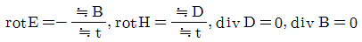
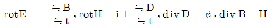
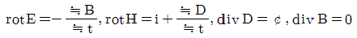
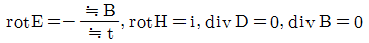
(정답률: 알수없음)
43. 자계 중에 이것과 직각으로 놓인 도체에 Ｉ[A]의 전류를 흘릴 때 f[N]의 힘이 작용하였다. 이 도체를 v[m/s]의 속도로 자계와 직각으로 운동시킬 때의 기전력 e[V]는?
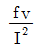
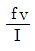
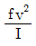
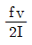
(정답률: 알수없음)
44. 면적이 S[m2]이고 극간의 거리가 d[m]인 평행판콘덴서에 비유전률 εs 의 유전체를 채울 때 정전용량은 몇 F 인가?
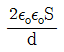
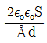
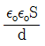
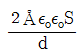
(정답률: 알수없음)
45. 변위전류와 관계가 가장 깊은 것은?
- 반도체
- 유전체
- 자성체
- 도체
(정답률: 알수없음)
46. 그림과 같이 반지름 a[m]인 원형 도선에 전하가 선밀도 ∴[C/m]로 균일하게 분포되어 있다. 그 중심에 수직한 z 축상의 한점 P 의 전계의 세기는 몇 V/m 인가?
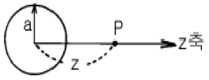
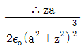
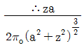
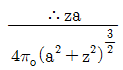
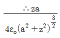
(정답률: 알수없음)
47. 공극(air gap)이 δ[m]인 강자성체로 된 환상 영구자석에서 성립하는 식은? (단, ℓ[m]는 영구자석의 길이이며 ℓ ≫ δ이고, 자속 밀도와 자계의 세기를 각각 B[Wb/m2], H[AT/m]라 한다.)
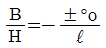
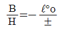
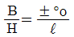
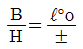
(정답률: 알수없음)
48. 그림과 같이 한변의 길이가 ℓ[m]인 정6각형 회로에 전류 Ｉ[A]가 흐르고 있을 때 중심 자계의 세기는 몇 A/m 인가?
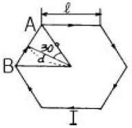
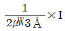
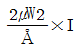
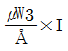
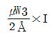
(정답률: 알수없음)
49. 강자성체의 자속밀도 B 의 크기와 자화의 세기 Ｊ의 크기 사이에는 어떤 관계가 있는가?
- Ｊ는 B 와 같다.
- Ｊ는 B 보다 약간 작다.
- Ｊ는 B 보다 약간 크다.
- Ｊ는 B 보다 대단히 크다.
(정답률: 알수없음)
50. 주파수의 증가에 대하여 가장 급속히 증가하는 것은?
- 표피효과의 두께의 역수
- 히스테리시스 손실
- 교번자속에 의한 기전력
- 와전류 손실
(정답률: 알수없음)
51. 비유전율 εs= 5 인 등방 유전체의 한 점에서 전계의 세기가 E = 104V/m일 때 이 점의 분극률 xe는 몇 F/m 인가?
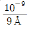
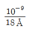
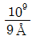
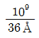
(정답률: 알수없음)
52. 반지름 a[m], 중심간 거리 d[m]인 두 개의 무한장 왕복선로에 서로 반대 방향으로 전류 Ｉ[A]가 흐를 때, 한 도체에서 x[m] 거리인 A 점의 자계의 세기는 몇 AT/m 인가?(단, d ≫ a, x ≫ a 라고 한다.)
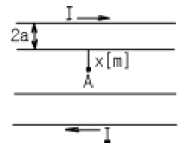
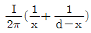
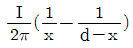
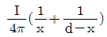
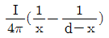
(정답률: 알수없음)
53. 그림과 같이 전류가 흐르는 반원형 도선이 평면 z = 0 상에 놓여 있다. 이 도선이 자속밀도 B=0.8ax - 0.7ay+ az[Wb/m2] 인 균일 자계내에 놓여 있을 때 도선의 직선부분에 작용하는 힘은 몇 N 인가?
- 4ax + 3.2az
- 4ax - 3.2a z
- 5ax - 3.5a z
- -5ax + 3.5a z
(정답률: 알수없음)
54. 평면 도체로부터 수직거리 a[m]인 곳에 점전하 Q[C]이 있다. Q 와 평면도체사이에 작용하는 힘은 몇 N 인가?(단, 평면 도체 오른편을 유전율 ε의 공간이라 한다.)
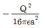
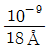
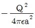
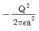
(정답률: 알수없음)
55. 전하밀도 ρs[C/m2]인 무한 판상 전하분포에 의한 임의점의 전장에 대하여 틀린 것은?
- 전장은 판에 수직방향으로만 존재한다.
- 전장의 세기는 전하밀도 ρs 에 비례한다.
- 전장의 세기는 거리 r 에 반비례한다.
- 전장의 세기는 매질에 따라 변한다.
(정답률: 알수없음)
56. 다음 설명 중 틀린 것은?
- 전기력선의 방정식은 "전기력선의 접선방향이 전계의 방향이다."에서 유래된 것이다.
- "전기력선은 스스로 루프(loop)를 만들 수 없다."라 함은 전계의 세기의 유일성을 나타내는 것이다.
- 구좌표로 표시한 전기력선의 방정식은
 로 표시된다.
로 표시된다. - 진공 중에서 1[C]의 점전하로부터 발산되어 나오는 전기력선의 수는 약 1.13×1011 개 이다.
(정답률: 알수없음)
57. 진공의 전하분포 공간내에서 전위가 V = x2 + y2[V]로 표시 될 때, 전하밀도는 몇 C/m3 인가?
- -4εo
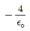
- -2εo
(정답률: 알수없음)
58. 자화된 철의 온도를 높일 때 자화가 서서히 감소하다가 급격히 강자성이 상자성으로 변하면서 강자성을 잃어버리는 온도는?
- 켈빈(Kelvin)온도
- 연화(Transition)온도
- 전이온도
- 큐리(Curie)온도
(정답률: 알수없음)
59. 임의의 단면을 가진 2개의 원주상의 무한히 긴 평행도체가 있다. 지금 도체의 도전률을 무한대라고 하면 C, L, ε 및 μ사이의 관계는? (단, C는 두 도체간의 단위길이당 정전용량, L은 두 도체를 한개의 왕복회로로 한 경우의 단위길이당 자기인 덕턴스, ε은 두 도체사이에 있는 매질의 유전률, μ는 두 도체사이에 있는 매질의 투자율이다.)
- CΧ = LΧ°
- LC = Χ°
(정답률: 알수없음)
60. 그림과 같이 단면적 S[m2], 평균 자로의 길이 ℓ[m], 투자율 μ[H/m]인 철심에 N1, N2 의 권선을 감은 무단 솔레노이드가 있다. 누설자속을 무시할 때 권선의 상호 인덕턴스는 몇 H 가 되는가?
(정답률: 알수없음)
4과목: 전력공학
61. 반지름 r[m]인 전선 A, B, C 가 그림과 같이 수평으로 D[m] 간격으로 배치되고 3선이 완전 연가된 경우 각 선의 인덕턴스는 몇 mH/km 인가?
- L=0.⑤ + 0.46⑤

- L=0.⑤ + 0.46⑤

- L=0.⑤ + 0.46⑤

- L=0.⑤ + 0.46⑤

(정답률: 알수없음)
62. 전력계통의 절연협조 계획에서 채택되어야 하는 모선 피뢰기와 변압기의 관계에 대한 그래프로 옳은 것은?
(정답률: 알수없음)
63. 송·배전 계통에서의 안정도 향상 대책이 아닌 것은?
- 병렬 회선수 증가
- 병렬 콘덴서 설치
- 직렬 콘덴서 설치
- 기기의 리액턴스 감소
(정답률: 알수없음)
64. 원자력발전소에서 비등수형 원자로에 대한 설명으로 틀린것은?
- 연료로 농축 우라늄을 사용한다.
- 감속재로 헬륨 액체금속을 사용한다.
- 냉각재로 경수를 사용한다.
- 물을 노내에서 직접 비등시킨다.
(정답률: 알수없음)
65. 변전소에서 비접지 선로의 접지보호용으로 사용되는 계전기에 영상전류를 공급하는 것은?
- CT
- GPT
- ZCT
- PT
(정답률: 알수없음)
66. 고속 중성자를 감속시키지 않고 냉각재로 액체 나트륨을 사용하는 원자로를 영문 약어로 나타내면?
- FBR
- CANDU
- BWR
- PWR
(정답률: 알수없음)
67. 소호리액터 접지계통에서 리액터의 탭을 완전 공진상태에서 약간 벗어나도록 하는 이유는?
- 전력 손실을 줄이기 위하여
- 선로의 리액턴스분을 감소시키기 위하여
- 접지 계전기의 동작을 확실하게 하기 위하여
- 직렬공진에 의한 이상전압의 발생을 방지하기 위하여
(정답률: 알수없음)
68. 송전선로의 폐란티 효과를 방지하는데 효과적인 것은?
- 분로리액터 사용
- 복도체 사용
- 병렬콘덴서 사용
- 직렬콘덴서 사용
(정답률: 알수없음)
69. 다음 중 현재 널리 사용되고 있는 GCB(Gas Circuit Breaker)용 가스는?
- SF6 가스
- 알곤가스
- 네온가스
- N2 가스
(정답률: 알수없음)
70. 어떤 수력발전소의 안내날개의 열림 등 기타조건은 불변으로 하여 유효낙차가 30% 저하되면 수차의 효율이 10% 저하된다면, 이런 경우에는 원래 출력의 약 몇 % 가 되는가?
- 53
- 58
- 63
- 68
(정답률: 알수없음)
71. 그림과 같은 단상2선식 배전선의 급전점 A 에서 부하쪽으로 흐르는 전류는 몇 A 인가?(단, 저항값은 왕복선의 값이다.)
- 28
- 32
- 41
- 49
(정답률: 알수없음)
72. % 임피던스에 대한 설명으로 틀린 것은?
- 단위를 가지지 않는다.
- 절대량이 아닌 기준량에 대한 비를 나타낸 것이다.
- 기기 용량의 크기와 관계없이 일정한 범위로 사용한다.
- 변압기나 동기기의 내부 임피던스만 사용 할 수 있다.
(정답률: 알수없음)
73. 최근에 초고압 송전계통에서 단권변압기가 사용되고 있는 데 그 이유로 볼 수 없는 것은?
- 중량이 가볍다.
- 전압변동률이 적다.
- 효율이 높다.
- 단락전류가 적다.
(정답률: 알수없음)
74. 전력, 역률, 거리가 같을 때, 사용 전선량이 같다면 3상 3선식과 3상4선식의 전력 손실비는 얼마인가?(단, 4선식의 중성선의 굵기는 외선과 같고, 외선과 중성 선간의 전압은 3선식의 선간전압과 같고, 3상 평형 부하이다.)
- 1/3
- 1/2
- 3/4
- 9/4
(정답률: 알수없음)
75. 선간 단락고장을 대칭좌표법으로 해석 할 경우 필요한 것은?
- 정상임피던스도 및 역상임피던스도
- 정상임피던스도 및 영상임피던스도
- 역상임피던스도 및 영상임피던스도
- 영상임피던스도
(정답률: 알수없음)
76. 직류 송전에 대한 설명으로 틀린 것은?
- 직류 송전에서는 유효전력과 무효전력을 동시에 보낼 수 있다.
- 역률이 항상 1 로 되기 때문에 그 만큼 송전 효율이 좋아 진다.
- 직류 송전에서는 리액턴스라든지 위상각에 대해서 고려할 필요가 없기 때문에 안정도상의 난점이 없어진다.
- 직류에 의한 계통 연계는 단락용량이 증대하지 않기 때문에 교류 계통의 차단용량이 적어도 된다.
(정답률: 50%)
77. 그림과 같은 이상 변압기에서 2차측에 5牆의 저항부하를 연결하였을 때 1차측에 흐르는 전류 Ｉ는 약 몇 A 인가?
- 0.6
- 1.8
- 20
- 660
(정답률: 알수없음)
78. 공기차단기(ABB)의 공기 압력은 일반적으로 몇 kg/cm2정도 되는가?
- 5∼10
- 15∼30
- 30∼45
- 45∼55
(정답률: 알수없음)
79. 송전선로의 특성임피던스를 Z[Ω], 전파정수를 α라할 때 이 선로의 직렬임피던스는 어떻게 표현되는가?
- Zα
- Z/』
- 』/Z
- 1/Z』
(정답률: 알수없음)
80. 선로 전압강하 보상기(LDC)에 대한 설명으로 옳은 것은?
- 분로리액터로 전압 상승을 억제하는 것
- 선로의 전압 강하를 고려하여 모선 전압을 조정하는 것
- 승압기로 저하된 전압을 보상하는 것
- 직렬콘데서로 선로의 리액턴스를 보상하는 것
(정답률: 알수없음)